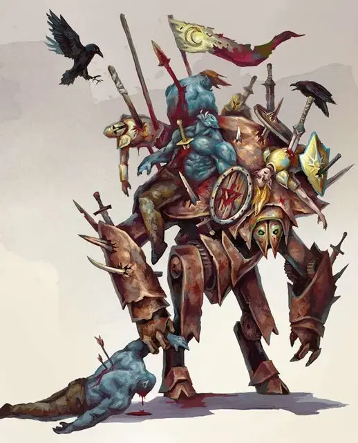

Собиратель Трупов
Cadaver Collector
Большой Конструкт, законно-злой

Класс Доспеха 17 (природный доспех)
Хиты 189 (18к10 + 90)
Скорость 30 футов
| мод | спас | ||
|---|---|---|---|
| СИЛ | 21 | +5 | +5 |
| ЛОВ | 14 | +2 | +2 |
| ТЕЛ | 20 | +5 | +5 |
| мод | спас | ||
|---|---|---|---|
| ИНТ | 5 | −3 | −3 |
| МДР | 11 | +0 | +0 |
| ХАР | 8 | −1 | −1 |
Иммунитет к урону некротическая энергия, психическая энергия, яд; дробящий, колющий, рубящий от немагических атак, кроме нанесённых адамантиновым оружием
Иммунитет к состояниям окаменение, отравление, паралич, очарование, испуг, истощение
Чувства тёмное зрение 60 футов, пассивное Восприятие 10
Опасность 14 (11500 опыта)
Бонус мастерства +5
Среда обитания Луг
Особенности
Языки:. Понимает все языки, но не может говорить на них.
Сопротивление магии. Собиратель трупов получает преимущество на спасброски против заклинаний и прочих магических эффектов.
Призыв спектров (Перезарядка после короткого или продолжительного отдыха). Бонусным действием собиратель трупов взывает к порабощённым душам убитых им, 1к6 спектров (без чувствительности к солнечному свету) появляются в свободном пространстве в пределах 15 футов от собирателя трупов. Спектры действуют сразу после собирателя трупов, используя значение его Инициативы и сражаются до того, пока не будут уничтожены. Но они исчезают, если будет уничтожен собиратель трупов.
Действия
Мультиатака. Собиратель трупов совершает две атаки Ударом.
Удар. Рукопашная атака оружием: +10 к попаданию, досягаемость 5 футов, одна цель. Попадание: 18 (3к8 + 5) дробящий урон плюс 16 (3к10) урон некротической энергией.
Парализующее дыхание (Перезарядка 5-6). Собиратель трупов выпускает парализующий газ в 30 футов конус пред собой. Каждое существо, попавшее в эту область, должно совершить успешный спасбросок Телосложения Сл 18 или стать парализованным на 1 минуту. Парализованное существо может повторять этот спасбросок в конце каждого своего хода, завершая эффект при успехе.
Описание
Древние боевые машины, известные как собиратели трупов бесцельно блуждают по обожженным пустошам Ахерона, пока их не призовет некромант, хобгоблин-генерал или другой злой правитель чтобы увеличить размеры завоевательной армии.
Эти бесстрашные конструкты подчиняются своим призывателям пока их не отправят обратно в Ахерон, но если призыватель погибает, то собиратель трупов может блуждать по Материальному Плану веками, собирая трупы, пока ищет путь домой.
Подчищая Мёртвых. Собиратели трупов отвечают на призыв смертного только, если их призывают на место поля битвы: там, где битва уже в самом разгаре, или в месте неминуемой битвы, либо в месте, где уже произошла грандиозная битва.
Они заключают себя в доспехи и орудия павших воинов и насаживают их трупы на копья и другие виды оружия, торчащие из их добытой брони.
Призванные Берсерки. Трупы, которые собираются на корпусе конструкта - это не просто мерзкие боевые трофеи. Собиратель трупов может призвать духов из этих трупов, чтобы те присоединились к битве с его противниками и парализовали их для неизбежного насаживания. Хоть эти духи и слабы по отдельности, собиратель трупов может призвать неисчислимое количество, если дать ему время.
Природа Конструкта. Собирателю не нужен воздух, еда, питье или сон.
Собиратели трупов не могут призвать духов тех, кого они ещё не убили, а уничтоженные духи не возвращаются обратно. Лишите его жертв и не атакуйте, пока не будете уверены, что можете его уничтожить. К примеру, заклинание "Метеоритный дождь" прекрасно работает против них.